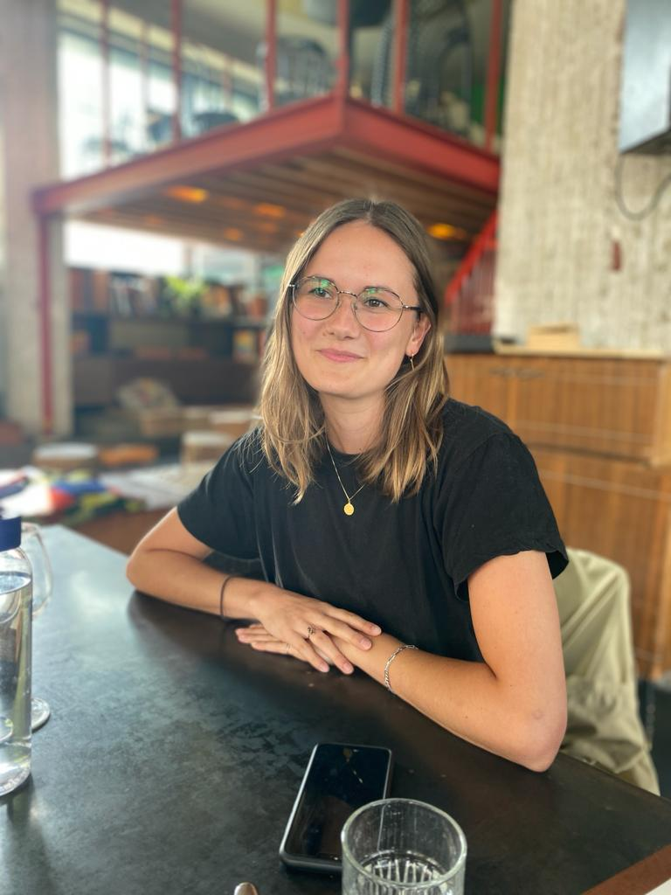

Mijn naam is Margot en ik ben 26 jaar oud. Ik ben afgestudeerd met een bachelor Media en Cultuur en een master Geschiedenis. Ik ontdekte dat ik programmeren leuk vond en ben daarom begonnen met een front-end development opleiding bij Winc Academy.
